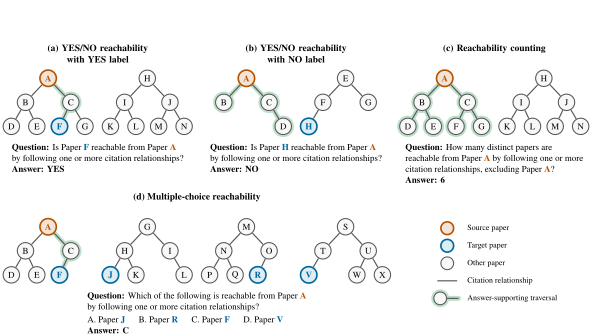
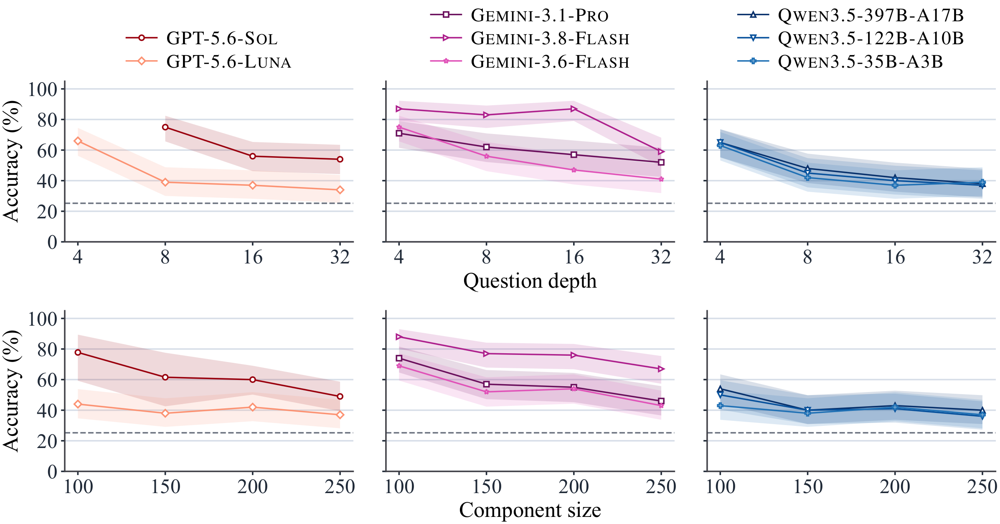
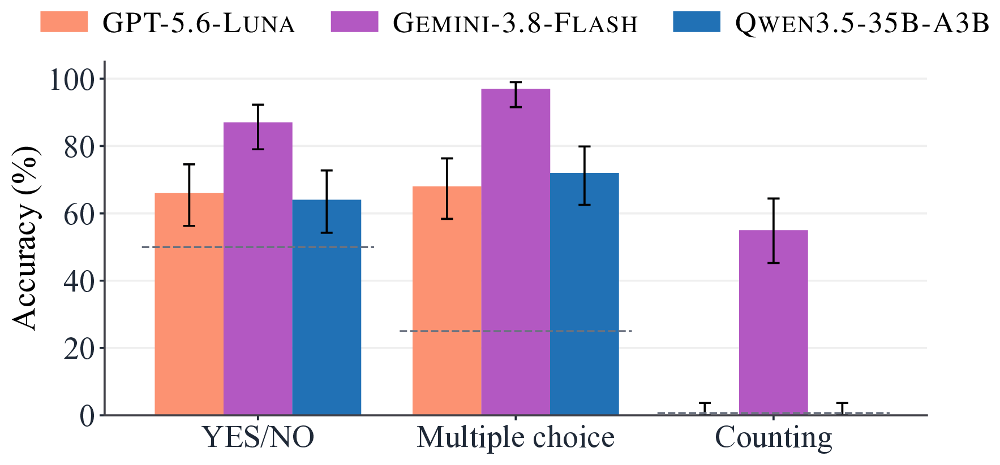
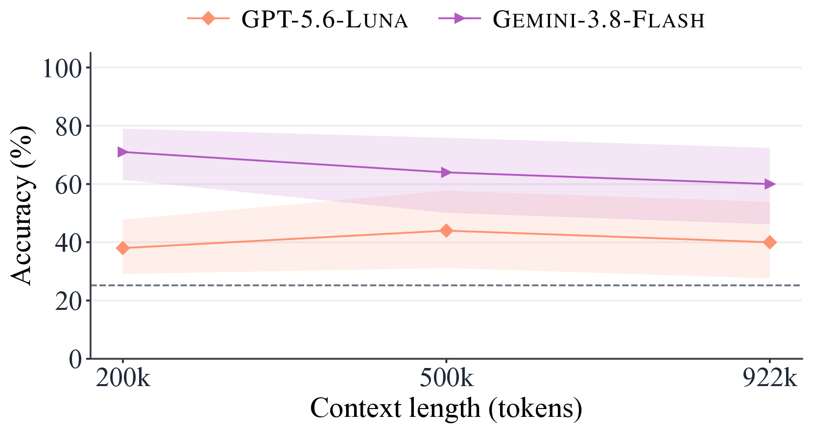
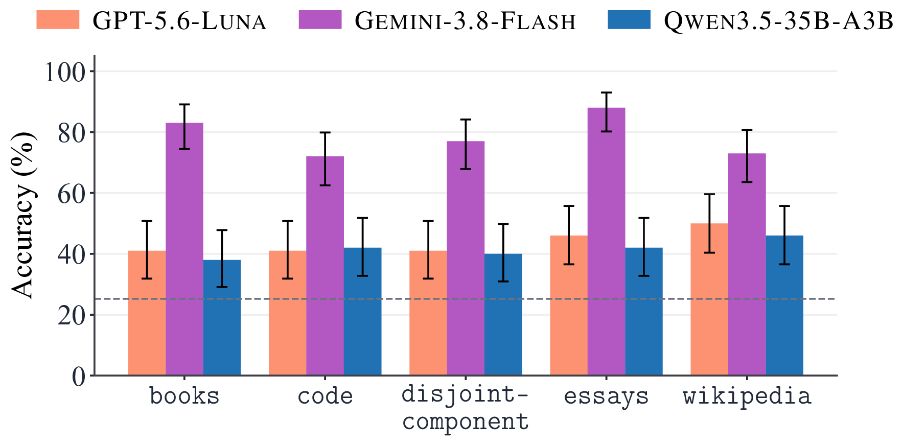
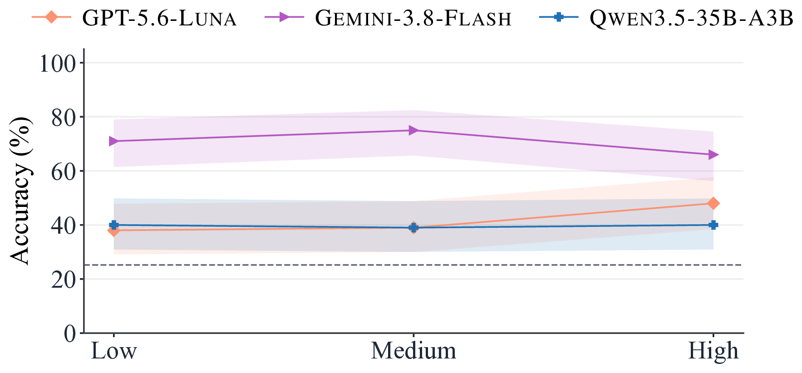

Key Findings
Depth 16+
Long reasoning paths break search
At question depths of 16 and 32, the GPT-5.6 and Qwen3.5 models answer YES/NO questions no better than random guessing, mostly by answering NO.
4 of 8
Counting is the hardest task
Four of the eight models answer no counting example correctly. The others get worse as the subgraph grows.
68% → 14%
Models stop searching early
Adding a "None" option that is never correct drops GPT-5.6-Luna from 68% to 14% on multiple choice: the model falls back to the negative answer.
200k → 922k
Other factors matter less
Longer contexts, different distractor types, and higher reasoning effort do not reliably change accuracy.
Current LLMs often stop exploring the context before they reach the answer, even though every fact they need is in the context.
Why GraphNIAH?
Real data
Built from the real Semantic Scholar citation graph, not synthetic facts or LLM-generated text.
No contamination
All papers on the sampled paths were published after the evaluated models' knowledge cutoff.
Updatable, no annotation
The pipeline is fully automatic, and answers are computed from the graph. New examples can be built as new papers appear.
Non-linear reasoning
The next step is not obvious. The model must search over many possible paths, or show that no path exists.
| Benchmark | Multi-hop reasoning | Real data | Updatable | No human annotation | Non-linear reasoning |
|---|---|---|---|---|---|
| Naive NIAH | ✗ | ✗ | ✓ | ✓ | ✗ |
| RULER | ✓ | ✗ | ✗ | ✓ | ✗ |
| BABILong | ✓ | ✗ | ✓ | ✓ | ✗ |
| LV-Eval | ✓ | ✓ | ✗ | ✗ | ✗ |
| NeedleBench | ✓ | ✗ | ✓ | ✓ | ✓ |
| Counting-Stars | ✓ | ✗ | ✓ | ✓ | ✗ |
| Sequential-NIAH | ✓ | ✗ | ✗ | ✓ | ✗ |
| NeedleChain | ✓ | ✗ | ✓ | ✓ | ✗ |
| NoLiMa | ✓ | ✗ | ✓ | ✓ | ✗ |
| U-NIAH | ✓ | ✗ | ✓ | ✗ | ✗ |
| GraphNIAH (ours) | ✓ | ✓ | ✓ | ✓ | ✓ |
Three Reachability Tasks
Each example samples a subgraph of the Semantic Scholar citation graph with several
connected components. Every paper is written as a text block with an APA-style
reference list. A paper is reachable from another paper if a chain of
cites / cited_by relationships stated in the context connects them.

How an Example Is Built
Sample the backbone
Sample a real citation path of 3k − 2 papers and split it into a distractor path, the true path from s to t (k papers), and another distractor path. At least k − 1 search steps are needed from either end.
Grow the subgraph
Add real neighboring papers with a preferential-attachment rule (α = 0.1) that mimics the scale-free degree distribution of citation graphs.
Render as text
Write each paper with its title, authors, publication information, and a reference list restricted to its component.
Add distractors
Fill the context up to 200k–922k tokens with code, essays, books, Wikipedia passages, or extra citation components, then shuffle all blocks.
Control Knobs
Each experiment varies one knob; the others are sampled at random for each example.
Results
We evaluate eight LLMs: GPT-5.6-Sol, GPT-5.6-Luna, Gemini-3.1-Pro, Gemini-3.8-Flash, Gemini-3.6-Flash, Qwen3.5-397B-A17B, Qwen3.5-122B-A10B, and Qwen3.5-35B-A3B. Shaded bands and error bars show 95% Wilson confidence intervals; the dashed gray line is random guessing. Hover over a point or bar to see its exact accuracy, interval, and number of examples, and click a model in a legend to hide or show it.
Accuracy falls as the reasoning path gets longer

- Accuracy drops with question depth for every model. Even Gemini-3.8-Flash, the best model, falls to 59% at depth 32.
- At depth 16 and 32, the GPT-5.6 and Qwen3.5 models answer
NOto almost every YES/NO question, so they do no better than random guessing. - Larger components mainly hurt the stronger models.
Counting is the hardest task
Four of the eight models answer no counting example correctly. For the others, counting accuracy falls sharply as components grow from 100 to 250 papers.

Models stop searching once a negative answer is available
We added a fifth multiple-choice option, "None of these targets is reachable from the source.", which is never correct. Two models then chose it in most examples and produced about half as many reasoning and output tokens.
| Model | 4 options | + "None" option |
|---|---|---|
| GPT-5.6-Luna | 68% | 14% |
| Qwen3.5-35B-A3B | 72% | 15% |
| Gemini-3.8-Flash | 97% | 97% |
| Random guessing | 25% | 20% |
Context length, distractor type, and reasoning effort matter less

Context length (tokens): no significant change from 200k to 922k. Qwen3.5 accepts at most 262k tokens.

Distractor type: no significant pairwise difference.

Reasoning effort: only GPT-5.6-Luna improves, at 8× the output tokens.
BibTeX
The BibTeX entry will be available here once the paper is public.